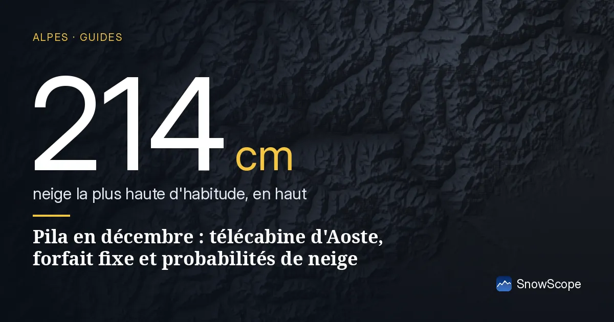

Pila en décembre : télécabine d'Aoste, forfait fixe et probabilités de neige
Pila se situe juste au-dessus d'Aoste, accessible par télécabine depuis la ville, et la neige en décembre dépend de l'altitude. Les pistes basses vers 1 533 m peuvent manquer de neige en début de mois, alors que les pistes vers 2 723 m ont une moyenne de 80 cm. Avec un forfait journée à 60,00 EUR toute la saison, le budget du week-end est simple.
Consultez les prévisions neige en temps réel pour Pila sur l'application SnowScopeHauteurs de neige, alertes poudreuse et carte 3D, gratuitement.
D'Aoste aux pistes
En venant en voiture pour le week-end, vous pouvez vous arrêter à Aoste et prendre la télécabine directement jusqu'à Pila. Le domaine skiable compte 56 km de pistes balisées et 16 remontées, s'étendant de 1 533 m au bas des remontées à 2 723 m au sommet pour 1 190 m de dénivelé.
Aujourd'hui, le 13 novembre 2026, les estimations de neige montrent un début précoce : 0 cm à la base (1 533 m), 4 cm à mi-montagne (2 128 m) et 14 cm au sommet (2 723 m). Sur les sept prochains jours, les estimations prévoient 26 cm de neige fraîche à la base, 53 cm à mi-montagne et 70 cm au sommet, tandis que les prévisions sur deux semaines pour la mi-montagne et au-dessus du 13 au 26 novembre se situent entre 52 et 74 cm.

Un tarif unique tout l'hiver
Sur le site officiel, un forfait adulte 1 jour coûte 60,00 EUR au tarif fixe toute la saison, du 28 novembre 2026 au 11 avril 2027. Vous n'avez pas besoin de chercher des dates hors saison pour éviter les prix élevés du week-end.
Pour les séjours plus longs, un forfait adulte 6 jours pour l'hiver 2026-27 coûte 322,00 EUR. Avoir un tarif unique facilite la gestion du budget d'un week-end de décembre avant de partir.
Probabilités de neige selon l'altitude
Dans notre historique de neige de 46 hivers passés (1980-81 à 2025-26), le bas des remontées (1 533 m) est souvent dégarni en décembre. Il y a en moyenne 34 cm lors d'un mois de décembre habituel (16 cm lors d'un hiver pauvre, 60 cm lors d'un hiver riche) et atteint 30 cm ou plus dans 41 %, 52 %, 59 % et 78 % des hivers passés au fil des quatre semaines de décembre, avec 50 cm ou plus dans seulement 9 %, 15 %, 26 % et 30 % des hivers passés.
La mi-montagne (2 128 m) affiche une moyenne de 45 cm (21 cm pauvre, 78 cm riche), atteignant 30 cm ou plus dans 50 %, 76 %, 85 % et 89 % des hivers passés et 50 cm ou plus dans 26 %, 33 %, 41 % et 59 % des hivers passés. Le sommet (2 723 m) affiche une moyenne de 80 cm (37 cm pauvre, 138 cm riche), atteignant 30 cm ou plus dans 87 %, 93 %, 98 % et 98 % des hivers passés et 50 cm ou plus dans 57 %, 78 %, 89 % et 89 % des hivers passés. Pour une couverture fiable, visez à partir de la mi-décembre et skiez de la mi-montagne jusqu'au sommet.
Pila comparé à La Thuile
La Thuile (France / Italie) possède un domaine skiable plus grand avec 79 km de pistes et 17 remontées entre 1 468 m et 2 608 m, pour un dénivelé de 1 140 m. Dans notre historique de neige, ses moyennes de décembre sont plus élevées : 44 cm à la base (1 468 m, 17 cm pauvre, 92 cm riche) et 67 cm à mi-montagne (2 038 m, 31 cm pauvre, 129 cm riche), où 30 cm ou plus sont présents dans 78 %, 91 %, 100 % et 100 % des hivers passés.
Au sommet (2 608 m), La Thuile affiche une moyenne de 98 cm (47 cm pauvre, 173 cm riche), atteignant 50 cm ou plus dans 76 %, 85 %, 93 % et 98 % des hivers passés sur les quatre semaines de décembre, avec 48 %, 67 %, 76 % et 87 % des hivers passés pour 30 cm ou plus à sa base. La Thuile offre de meilleures probabilités de neige en décembre, bien que nous n'ayons pas vérifié les prix des forfaits sur son site officiel.
Tendances sur 46 hivers passés
Entre les 15 premiers hivers (1980-81 à 1994-95) et les 15 derniers (2011-12 à 2025-26), la moyenne de mi-décembre à Pila a légèrement augmenté, passant de 31 cm à 36 cm à la base, de 42 cm à 49 cm à mi-montagne, et de 74 cm à 84 cm au sommet.
Les hivers individuels varient encore fortement. L'hiver dernier (2025-26) affichait une moyenne de 27 cm à la base, 39 cm à mi-montagne et 74 cm au sommet, tandis que le mois de décembre le plus pauvre (2015-16) est tombé à 14 cm, 16 cm et 26 cm contre le mois de décembre le plus riche (1982-83) à 67 cm, 88 cm et 158 cm. La neige durable commence généralement autour du 10 octobre au sommet et du 26 octobre à la base, pour atteindre des sommets saisonniers de 81 cm, 116 cm et 214 cm.
Conseils aux skieurs
- Achetez votre forfait adulte 1 jour à 60,00 EUR ou 6 jours à 322,00 EUR sur le site officiel, car le tarif journalier reste fixe du 28 novembre 2026 au 11 avril 2027.
- Visez la période du 15-21 décembre ou du 22-28 décembre pour une meilleure couverture neigeuse, quand la mi-montagne (2 128 m) atteint 30 cm ou plus dans 85 % et 89 % des hivers passés.
- Restez sur les remontées supérieures près de 2 723 m si vous y allez les deux premières semaines de décembre, où 30 cm ou plus sont présents dans 87 % et 93 % des hivers passés.
- Consultez la bulletin des avalanches avant de faire du hors-piste, surtout après des tempêtes précoces comme celles annoncées par les prévisions de 52 à 74 cm sur deux semaines pour la mi-montagne et au-dessus.
Autres cartes (sites externes)
Références et crédits
- Pila, official daily ski pass prices 2026-27 pila.it/en/skipass-pila/daily-skipass/
- SnowScope, December snow at three heights and today's snow map snowscope.app/
À propos de ces chiffres
Chiffres de neige : historique SnowScope, 46 hivers passés (1980-81 à 2025-26) à trois altitudes de chaque station (un modèle du passé corrigé de l'altitude : une estimation pour une zone, pas des mesures de la station) ; chiffres de décembre calculés à partir des hauteurs quotidiennes de ces hivers. Neige actuelle et tendance à deux semaines : prévisions SnowScope (tendance ECMWF et GFS, une fourchette, pas une promesse). Remontées et pistes : cartographie OpenSkiMap. Prix : pages officielles des stations ci-dessous, lues le 2026-11-13 ; les prix peuvent changer, vérifiez avant de réserver.
Bulletins d'avalanche officiels: AINEVA – Associazione Interregionale Neve e Valanghe
Citer ce bulletin
Pour la recherche, l'enseignement ou la presse : chiffres et graphiques réutilisables librement sous CC BY 4.0 avec cette citation.
SnowScope (2026), Pila en décembre : télécabine d'Aoste, forfait fixe et probabilités de neige, https://snowscope.app/blog/fr/2026/11/pila-aosta-december-ski-flat-price-snow-2026.html, consulté le 2026-11-14
SnowScope (Atlas Labs). (2026, November 14). Pila en décembre : télécabine d'Aoste, forfait fixe et probabilités de neige. SnowScope snow reports. https://snowscope.app/blog/fr/2026/11/pila-aosta-december-ski-flat-price-snow-2026.html
BibTeX
@misc{snowscope2026pilaaostadecemberskiflat,
author = {{SnowScope (Atlas Labs)}},
title = {Pila en décembre : télécabine d'Aoste, forfait fixe et probabilités de neige},
year = {2026},
month = nov,
howpublished = {\url{https://snowscope.app/blog/fr/2026/11/pila-aosta-december-ski-flat-price-snow-2026.html}},
note = {Published 2026-11-14 13:29 UTC; accessed 2026-11-14}
}· CC BY 4.0 · Méthodes, données et outils →
Pila : neige et température selon l'altitude, cet hiver vs l'hiver dernier (outils) →
Suivre Pila
Gratuit : un message quand la neige arrive, et la météo chaque matin.